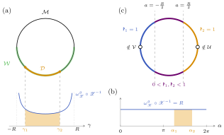

Appendix C • Examples
C.7 Example of Integration (§§8.1–8.3)
The construction of Chapter 8 on the circle, where every step is a one-variable integral: the metric volume form in three charts, the length of an arc in two of them, and the length of the whole circle from a partition of unity (Figure C.13).
Manifold and charts. Let \(\mathcal{M} \coloneqq \{ p = (a, b) \in \mathbb{R}^2 \mid a^2 + b^2 = R^2 \}\), \(R > 0\), with the topology induced from \(\mathbb{R}^2\), and the charts, given through their inverses, \[ \begin{aligned} \mathcal{U} &\coloneqq \mathcal{M} \setminus \{ (R, 0) \}, & \mathscr{X}^{-1}(\alpha) &= R \, (\cos \alpha, \sin \alpha), & \alpha &\in (0, 2\pi), \\ \mathcal{V} &\coloneqq \mathcal{M} \setminus \{ (-R, 0) \}, & \mathscr{Y}^{-1}(\beta) &= R \, (\cos \beta, \sin \beta), & \beta &\in (-\pi, \pi), \\ \mathcal{W} &\coloneqq \{ p \in \mathcal{M} \mid b < 0 \}, & \mathscr{Z}^{-1}(\gamma) &= \big( \gamma, - \sqrt{R^2 - \gamma^2} \big), & \gamma &\in (-R, R), \end{aligned} \] the last one projecting the lower half onto the \(a\)-axis. The transition maps to \(\mathscr{X}\) and their Jacobians are \[ \textrm{\runic ᛖ}_{\mathcal{V}\mathcal{U}}(\beta) = \begin{cases} \beta, & \beta > 0 \\ \beta + 2\pi, & \beta < 0 \end{cases}, \quad \textrm{\runic ᛞ}_{\mathcal{U}\mathcal{V}} = 1 ; \qquad \textrm{\runic ᛖ}_{\mathcal{W}\mathcal{U}}(\gamma) = 2\pi - \arccos \frac{\gamma}{R}, \quad \textrm{\runic ᛞ}_{\mathcal{U}\mathcal{W}}(\gamma) = \frac{1}{\sqrt{R^2 - \gamma^2}} . \] Both are positive, and so is the one between \(\mathscr{Y}\) and \(\mathscr{Z}\), their quotient on \(\mathcal{V} \cap \mathcal{W} \subseteq \mathcal{U}\): \(\mathcal{A}^\uparrow \coloneqq \{ (\mathcal{U}, \mathscr{X}), (\mathcal{V}, \mathscr{Y}), (\mathcal{W}, \mathscr{Z}) \}\) is an oriented atlas.
Metric volume form. The metric induced from \(\mathbb{R}^2\), \(g(\mathcal{X}_1, \mathcal{X}_2) \coloneqq \sum_{k=1}^2 d\xi^k\lceil \mathcal{X}_1 \rfloor \, d\xi^k\lceil \mathcal{X}_2 \rfloor\) with \(\xi^1, \xi^2\) the scalar fields \(p \mapsto a, b\), has in a chart \(\mathscr{X}\) the single component \((g_\mathscr{X})_{11} = \sum_k \big( \partial_1 [ \xi^k \circ \mathscr{X}^{-1} ] \big)^2\), the squared speed of \(\mathscr{X}^{-1}\). Hence \[ (g_\mathscr{X})_{11} = (g_\mathscr{Y})_{11} = R^2 \big( \sin^2 + \cos^2 \big) = R^2, \qquad (g_\mathscr{Z})_{11} = 1 + \frac{\gamma^2}{R^2 - \gamma^2} = \frac{R^2}{R^2 - \gamma^2}, \] and, by (8.5), \[ \big( \omega^g_\mathscr{X} \circ \mathscr{X}^{-1} \big)(\alpha) = \big( \omega^g_\mathscr{Y} \circ \mathscr{Y}^{-1} \big)(\beta) = R, \qquad \big( \omega^g_\mathscr{Z} \circ \mathscr{Z}^{-1} \big)(\gamma) = \frac{R}{\sqrt{R^2 - \gamma^2}} , \] in agreement with (8.1): \(\omega^g_\mathscr{Z} = \textrm{\runic ᛞ}_{\mathcal{U}\mathcal{W}} \, \omega^g_\mathscr{X}\). The projection \(\mathscr{Z}\) compresses the circle near the ends of \(\mathcal{W}\), where it becomes vertical, and its density grows there.
Integral over a region. Let \(\mathcal{D}\) be the arc \(\alpha \in (\alpha_1, \alpha_2)\), with \(\pi < \alpha_1 < \alpha_2 < 2\pi\), so that \(\overline{\mathcal{D}}\) is compact and contained in \(\mathcal{U} \cap \mathcal{W}\), and \(f = 1\). By (8.3), its length in the two charts is, with \(\gamma_i \coloneqq R \cos \alpha_i\), \begin{align*} \text{in } \mathscr{X} : \quad \int_\mathcal{D} \Omega^g &= \int_{\alpha_1}^{\alpha_2} d\alpha \; R = R \, (\alpha_2 - \alpha_1), \\ \text{in } \mathscr{Z} : \quad \int_\mathcal{D} \Omega^g &= \int_{\gamma_1}^{\gamma_2} d\gamma \; \frac{R}{\sqrt{R^2 - \gamma^2}} = R \Big[ \arcsin \frac{\gamma}{R} \Big]_{\gamma_1}^{\gamma_2} \overset{\substack{\arcsin(\cos \alpha) \, = \, \alpha - 3\pi/2 \\ \text{on } (\pi, 2\pi)}}{=} R \, (\alpha_2 - \alpha_1) . \end{align*} Without the volume form, the chart representatives of \(f\) alone give \(\alpha_2 - \alpha_1\) and \(\gamma_2 - \gamma_1 = R \, (\cos \alpha_2 - \cos \alpha_1)\), which differ. With the chart \(\mathscr{Z}'(a, b) \coloneqq - a\) instead of \(\mathscr{Z}\), the Jacobian, and with it the density \(-R / \sqrt{R^2 - \gamma^2}\), would be negative, and the chart integral would give \(- R \, (\alpha_2 - \alpha_1)\): \(\mathscr{Z}'\) does not belong to \(\mathcal{A}^\uparrow\).
Integral over the whole manifold. \(f = 1\) does not vanish near \((R, 0) \notin \mathcal{U}\), nor near \((-R, 0) \notin \mathcal{V}\), so a partition of unity is needed. Let \(\chi : \mathbb{R} \to [0, 1]\) be smooth, with \(\chi = 1\) on \((-\infty, -\frac{1}{2}]\) and \(\chi = 0\) on \([\frac{1}{2}, \infty)\), and \[ \textrm{\runic ᚹ}_1(p) \coloneqq \chi(a / R), \qquad \textrm{\runic ᚹ}_2 \coloneqq 1 - \textrm{\runic ᚹ}_1 . \] \(\operatorname{supp} \textrm{\runic ᚹ}_1 \subseteq \{ a \leq R/2 \} \subset \mathcal{U}\) and \(\operatorname{supp} \textrm{\runic ᚹ}_2 \subseteq \{ a \geq -R/2 \} \subset \mathcal{V}\), so \(\{ \textrm{\runic ᚹ}_1, \textrm{\runic ᚹ}_2 \}\) is a partition of unity subordinate to \(\{ \mathcal{U}, \mathcal{V} \}\). By (8.4), computing each term in the chart of its domain, \[ \int_\mathcal{M} \Omega^g = \int_{0}^{2\pi} d\alpha \; R \, \chi(\cos \alpha) + \int_{-\pi}^{\pi} d\beta \; R \, \big( 1 - \chi(\cos \beta) \big) \overset{2\pi\text{-periodic}}{=} \int_{-\pi}^{\pi} d\beta \; R \, \big( \chi(\cos \beta) + 1 - \chi(\cos \beta) \big) = 2 \pi R , \] and \(\chi\), i.e. the partition of unity, drops out. In practice one integrates in \(\mathscr{X}\) alone, \(\int_0^{2\pi} d\alpha \, R = 2\pi R\), ignoring the single missing point \((R, 0)\); that it does not contribute agrees with the result above, but is not covered by (8.3).
